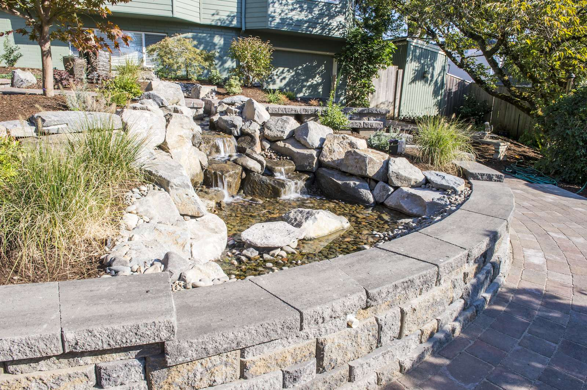
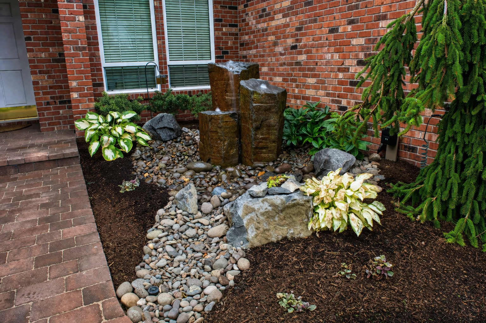

Expert retaining walls for Oregon City homeowners — designed and built by Oregon Landscape. LCB #8864.
Oregon City properties often have significant topographic character — hillsides, terraced yards, and areas where slope control has been needed for years. We build retaining walls that solve the structural problem while looking appropriate to the property's character.
Natural stone walls, concrete block systems, and boulder placements all have their place depending on the grade, the aesthetic, and the budget. We help you choose the right approach for your specific site.
From a small garden terrace to a multi-tier wall system on a steep hillside, we have the equipment and experience to build it right and build it to last.
Get a Free Estimate
Dry-stacked and mortared natural stone walls using local basalt, granite, and fieldstone. Zero maintenance, extremely durable, and a perfect fit for Pacific Northwest landscapes.

Segmental concrete block retaining walls (Versa-Lok, Allan Block, and similar systems) in a range of colors and textures — engineered for taller walls and steeper grades.

Pressure-treated timber walls are a cost-effective option for moderate grades — built with proper deadman anchors and drainage for long-term stability.

Multiple wall tiers create usable terraced spaces on steep hillsides — turning difficult slopes into flat planting beds, patios, or lawn areas.

Every wall includes French drain, drainage aggregate, and fabric filtration — critical for preventing hydrostatic pressure buildup and wall failure on Oregon's wet hillsides.
Failing or bowing walls repaired or fully rebuilt — we diagnose the underlying cause and fix it at the root so the problem doesn't return.



Absolutely — Oregon City's bluff and hillside character makes it one of the heaviest retaining wall markets we work in. Converting steep slopes into tiered garden terraces and level patio areas is some of our most complex and rewarding work.
Oregon City follows standard Oregon Building Code — walls over 4 feet require permits, and taller walls require a stamped engineer's plan. We work with licensed engineers for wall systems over the threshold so permit applications are complete and approvable.
Hillside walls in Oregon City often intercept significant subsurface water moving down the slope. We oversize drainage behind these walls — larger-diameter drainpipe, more gravel volume, and positive outfalls — to handle the actual water load, not just the minimum.